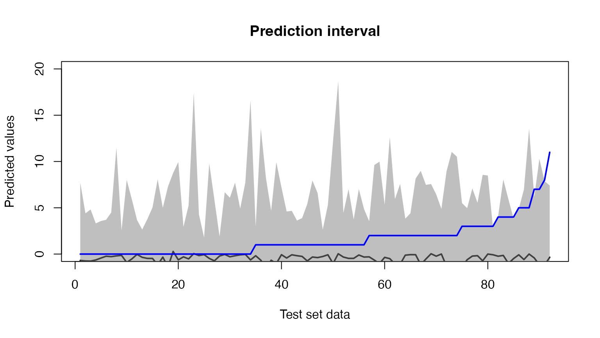

zeroinfl.RmdArticle production by graduate students in biochemistry Ph.D. programs (sample of 915 biochemistry graduate students).
options(repos = c(
techtonique = "https://r-packages.techtonique.net",
CRAN = "https://cloud.r-project.org"
))
install.packages("rvfl")## Installing package into '/private/var/folders/cp/q8d6040n3m38d22z3hkk1zc40000gn/T/Rtmpyijc0s/temp_libpathd5414d9c0489'
## (as 'lib' is unspecified)## Warning: unable to access index for repository https://r-packages.techtonique.net/bin/macosx/big-sur-x86_64/contrib/4.3:
## cannot open URL 'https://r-packages.techtonique.net/bin/macosx/big-sur-x86_64/contrib/4.3/PACKAGES'## installing the source package 'rvfl'
library(rvfl)
data("bioChemists", package = "pscl")
df <- cbind.data.frame(art = bioChemists$art, model.matrix(art ~ ., bioChemists)[,-1])
set.seed(1243)
train_idx <- sample(nrow(df),
size = floor(0.9 * nrow(df)))
train_data <- df[train_idx, ]
train_data$art <- floor(train_data$art)
test_data <- df[-train_idx, -1]
y_test <- df[-train_idx, 1]
glmPois <- function(formula = "art ~ .", data = train_data) {
stats::glm(formula = formula,
family = poisson,
data = data)
}
glmQuasiPois <- function(formula = "art ~ .", data = train_data) {
stats::glm(formula = formula,
family = quasipoisson,
data = data)
}
glmNb <- function(formula = "art ~ .", data = train_data) {
MASS::glm.nb(formula = formula,
data = data)
}
zeroInfl <- function(formula="art ~ .", data = train_data) {
pscl::zeroinfl(formula = formula,
data = data)
}
zeroInflNb <- function(formula = "art ~ .", data = train_data) {
pscl::zeroinfl(formula = formula,
dist = "negbin",
data = data)
}
nnetTrainer <- function(formula = "art ~ .", data = train_data) {
nnet::nnet(formula = formula,
data = data,
size = 5,
linout = TRUE)
}
svmTrainer <- function(formula = "art ~ .", data = train_data) {
e1071::svm(formula = formula,
data = data,
type = "eps-regression")
}
rfTrainer <- function(formula = "art ~ .", data = train_data) {
randomForest::randomForest(formula = formula,
data = data)
}
fit_rvfl <- rvfl::rvfl(art ~ .,
n_hidden_features=50L,
data = train_data,
engine = glmPois,
positive_response=TRUE
)
print(summary(fit_rvfl, newdata = test_data))## Random Vector Functional Link (RVFL) Model Summary
## --------------------------------------------------
## Number of Hidden Features: 50
## Activation Function: relu
## Node Simulation Method: sobol
##
##
## Derivative Statistics:
## Mean StdDev CI_Lower CI_Upper P_Value
## femWomen -1.54298760 3.119175e-12 -1.542987600 -1.54298760 0.000000e+00
## marMarried -0.70559016 3.284054e-12 -0.705590161 -0.70559016 0.000000e+00
## kid5 -0.33908941 2.997459e-02 -0.345296975 -0.33288185 4.794067e-98
## phd -0.28108363 1.172281e-15 NA NA NA
## ment 0.01010092 3.665900e-02 0.002509053 0.01769278 9.679345e-03
## Significance
## femWomen ***
## marMarried ***
## kid5 ***
## phd
## ment **
preds <- predict(fit_rvfl, newdata = test_data, method="surrogate")## Registered S3 method overwritten by 'quantmod':
## method from
## as.zoo.data.frame zoo## [1] 54.34783
preds <- predict(fit_rvfl, newdata = test_data, method="bootstrap")
print(mean((preds[ , "lwr"] <= y_test)*(y_test <= preds[ , "upr"]))*100)## [1] 57.6087
fit_rvfl <- rvfl::rvfl(art ~ .,
n_hidden_features=50L,
data = train_data,
engine = glmQuasiPois,
positive_response=TRUE
)
print(summary(fit_rvfl, newdata = test_data))## Random Vector Functional Link (RVFL) Model Summary
## --------------------------------------------------
## Number of Hidden Features: 50
## Activation Function: relu
## Node Simulation Method: sobol
##
##
## Derivative Statistics:
## Mean StdDev CI_Lower CI_Upper P_Value
## femWomen -1.54298760 3.119175e-12 -1.542987600 -1.54298760 0.000000e+00
## marMarried -0.70559016 3.284054e-12 -0.705590161 -0.70559016 0.000000e+00
## kid5 -0.33908941 2.997459e-02 -0.345296975 -0.33288185 4.794067e-98
## phd -0.28108363 1.172281e-15 NA NA NA
## ment 0.01010092 3.665900e-02 0.002509053 0.01769278 9.679345e-03
## Significance
## femWomen ***
## marMarried ***
## kid5 ***
## phd
## ment **
preds <- predict(fit_rvfl, newdata = test_data, method="surrogate")
print(mean((preds[ , "lwr"] <= y_test)*(y_test <= preds[ , "upr"]))*100)## [1] 54.34783
preds <- predict(fit_rvfl, newdata = test_data, method="bootstrap")
print(mean((preds[ , "lwr"] <= y_test)*(y_test <= preds[ , "upr"]))*100)## [1] 57.6087
fit_rvfl <- rvfl::rvfl(art ~ .,
n_hidden_features=50L,
data = train_data,
engine = glmNb,
positive_response=TRUE
)
preds <- predict(fit_rvfl, newdata = test_data, method="surrogate")
print(mean((preds[ , "lwr"] <= y_test)*(y_test <= preds[ , "upr"]))*100)## [1] 51.08696
fit_rvfl <- rvfl::rvfl(art ~ .,
n_hidden_features=50L,
data = train_data,
engine = zeroInfl,
positive_response=TRUE
)
print(summary(fit_rvfl, newdata = test_data))## Random Vector Functional Link (RVFL) Model Summary
## --------------------------------------------------
## Number of Hidden Features: 50
## Activation Function: relu
## Node Simulation Method: sobol
##
##
## Derivative Statistics:
## Mean StdDev CI_Lower CI_Upper P_Value
## femWomen -3.68811221 4.84649508 -4.69179292 -2.68443151 1.053926e-10
## marMarried -0.51039163 0.68730730 -0.65272894 -0.36805432 2.402786e-10
## kid5 -1.00564235 1.35971730 -1.28723182 -0.72405287 2.747179e-10
## phd -0.04436939 0.13209817 -0.07172615 -0.01701264 1.768678e-03
## ment 0.03016664 0.05347215 0.01909287 0.04124041 5.034563e-07
## Significance
## femWomen ***
## marMarried ***
## kid5 ***
## phd **
## ment ***
preds <- predict(fit_rvfl, newdata = test_data, method="surrogate")
print(mean((preds[ , "lwr"] <= y_test)*(y_test <= preds[ , "upr"]))*100)## [1] 44.56522
preds <- predict(fit_rvfl, newdata = test_data, method="bootstrap")
print(mean((preds[ , "lwr"] <= y_test)*(y_test <= preds[ , "upr"]))*100)## [1] 46.73913
fit_rvfl <- rvfl::rvfl(art ~ .,
n_hidden_features=100L,
data = train_data,
engine = zeroInflNb,
positive_response=TRUE
)## Warning in sqrt(diag(vc)[np]): NaNs produced## Random Vector Functional Link (RVFL) Model Summary
## --------------------------------------------------
## Number of Hidden Features: 100
## Activation Function: relu
## Node Simulation Method: sobol
##
##
## Derivative Statistics:
## Mean StdDev CI_Lower CI_Upper P_Value Significance
## femWomen -6.2348614 31.096441 -12.6747519 0.2050292 0.05758965 .
## marMarried 2.9082489 15.062571 -0.2111211 6.0276190 0.06727720 .
## kid5 -2.5280428 21.089269 -6.8955068 1.8394212 0.25324505
## phd 2.1313951 11.156327 -0.1790148 4.4418051 0.07015210 .
## ment 0.2380098 1.747428 -0.1238722 0.5998918 0.19469525
preds <- predict(fit_rvfl, newdata = test_data, method="surrogate")
print(mean((preds[ , "lwr"] <= y_test)*(y_test <= preds[ , "upr"]))*100)## [1] 42.3913
preds <- predict(fit_rvfl, newdata = test_data, method="bootstrap")
print(mean((preds[ , "lwr"] <= y_test)*(y_test <= preds[ , "upr"]))*100)## [1] 42.3913
fit_rvfl <- rvfl::rvfl(art ~ .,
n_hidden_features=50L,
data = train_data,
engine = nnetTrainer,
positive_response=TRUE
)## # weights: 286
## initial value 1963.493942
## iter 10 value 1438.662591
## iter 20 value 1260.548041
## iter 30 value 1150.698935
## iter 40 value 1099.318979
## iter 50 value 1061.983444
## iter 60 value 1028.269414
## iter 70 value 994.507752
## iter 80 value 964.849663
## iter 90 value 949.895200
## iter 100 value 940.766969
## final value 940.766969
## stopped after 100 iterations## Random Vector Functional Link (RVFL) Model Summary
## --------------------------------------------------
## Number of Hidden Features: 50
## Activation Function: relu
## Node Simulation Method: sobol
##
##
## Derivative Statistics:
## Mean StdDev CI_Lower CI_Upper P_Value
## femWomen 0.001401292 1.1856320 -0.244136131 0.24693871 0.99097993
## marMarried -0.114912752 0.7346123 -0.267046650 0.03722115 0.13697529
## kid5 -0.258545950 1.1206092 -0.490617541 -0.02647436 0.02940019
## phd 0.081750434 0.5347247 -0.028987908 0.19248878 0.14598539
## ment 0.029531848 0.1326570 0.002059366 0.05700433 0.03542459
## Significance
## femWomen
## marMarried
## kid5 *
## phd
## ment *
preds <- predict(fit_rvfl, newdata = test_data, method="surrogate")
print(mean((preds[ , "lwr"] <= y_test)*(y_test <= preds[ , "upr"]))*100)## [1] 89.13043
preds <- predict(fit_rvfl, newdata = test_data, method="bootstrap")
print(mean((preds[ , "lwr"] <= y_test)*(y_test <= preds[ , "upr"]))*100)## [1] 92.3913
fit_rvfl <- rvfl::rvfl(art ~ .,
n_hidden_features=50L,
data = train_data,
engine = svmTrainer,
positive_response=TRUE
)
preds <- predict(fit_rvfl, newdata = test_data, method="surrogate")
print(mean((preds[ , "lwr"] <= y_test)*(y_test <= preds[ , "upr"]))*100)## [1] 85.86957
preds <- predict(fit_rvfl, newdata = test_data, method="bootstrap")
print(mean((preds[ , "lwr"] <= y_test)*(y_test <= preds[ , "upr"]))*100)## [1] 88.04348
fit_rvfl <- rvfl::rvfl(art ~ .,
n_hidden_features=50L,
data = train_data,
engine = rfTrainer,
positive_response=TRUE
)
print(summary(fit_rvfl, newdata = test_data))## Random Vector Functional Link (RVFL) Model Summary
## --------------------------------------------------
## Number of Hidden Features: 50
## Activation Function: relu
## Node Simulation Method: sobol
##
##
## Derivative Statistics:
## Mean StdDev CI_Lower CI_Upper P_Value
## femWomen 0.0000000000 0.000000000 NA NA NA
## marMarried 0.0000000000 0.000000000 NA NA NA
## kid5 0.0003122369 0.002106026 -0.0001239087 0.0007483825 0.1584307
## phd 0.0093619721 0.138098039 -0.0192373217 0.0379612659 0.5171754
## ment 0.0032090326 0.037632841 -0.0045845079 0.0110025732 0.4155499
## Significance
## femWomen
## marMarried
## kid5
## phd
## ment
preds <- predict(fit_rvfl, newdata = test_data, method="surrogate")
print(mean((preds[ , "lwr"] <= y_test)*(y_test <= preds[ , "upr"]))*100)## [1] 95.65217
preds <- predict(fit_rvfl, newdata = test_data, method="bootstrap")
print(mean((preds[ , "lwr"] <= y_test)*(y_test <= preds[ , "upr"]))*100)## [1] 93.47826## fit lwr upr
## [1,] -0.6869083 -7.363565 7.708338
## [2,] -0.7434864 -2.335450 4.398077
## [3,] -0.7564514 -3.248520 4.816907
## [4,] -0.6380076 -4.086908 3.314804
## [5,] -0.4305651 -2.491867 3.568647
## [6,] -0.2328175 -1.861005 3.697982
# Plot test set data and prediction interval
plot(preds[, "fit"],
type='l',
lwd=2,
xlab = "Test set data",
ylab = "Predicted values",
main = "Prediction interval",
ylim = c(0, 20))
polygon(c(1:nrow(preds), rev(c(1:nrow(preds)))),
c(preds[ , "lwr"], rev(preds[ , "upr"])),
col = rgb(0.5, 0.5, 0.5, 0.5),
border = NA)
lines(y_test, col = "blue", lwd = 2)